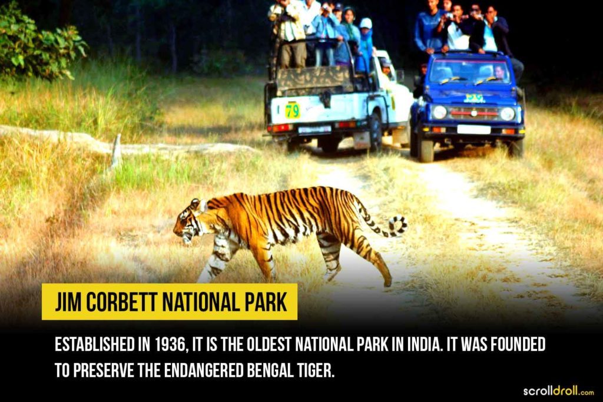
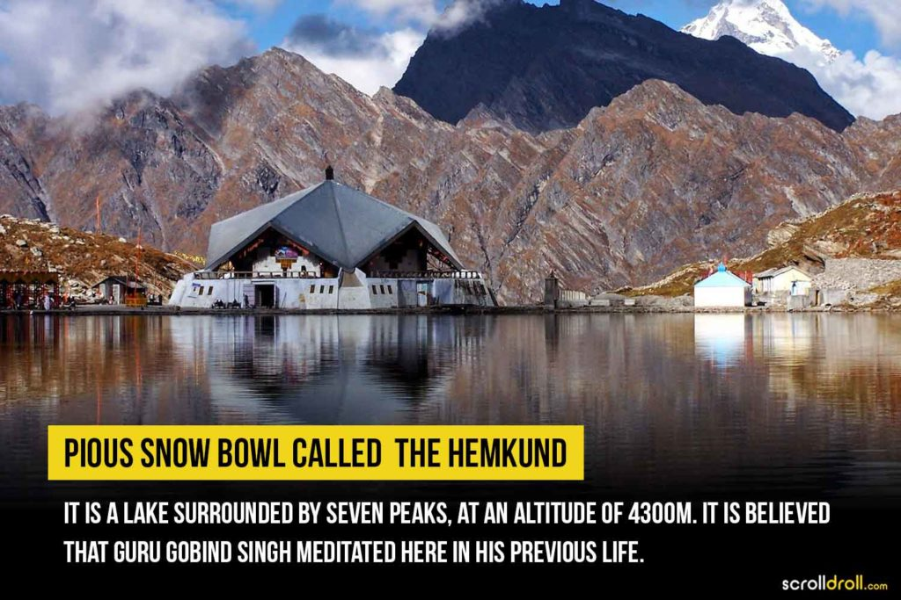
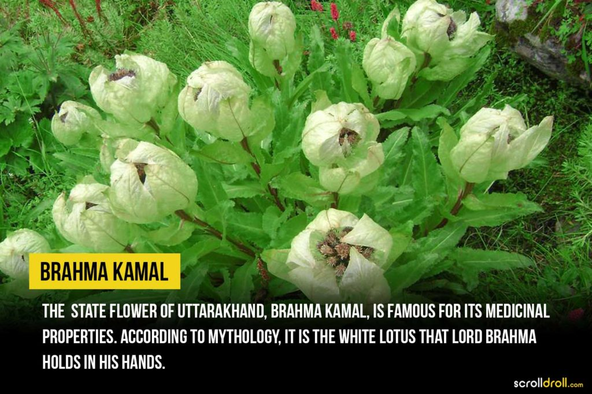
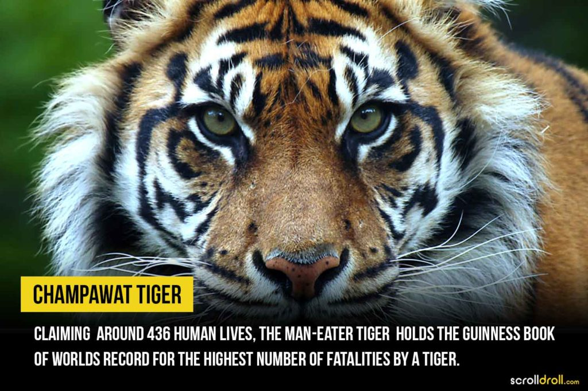
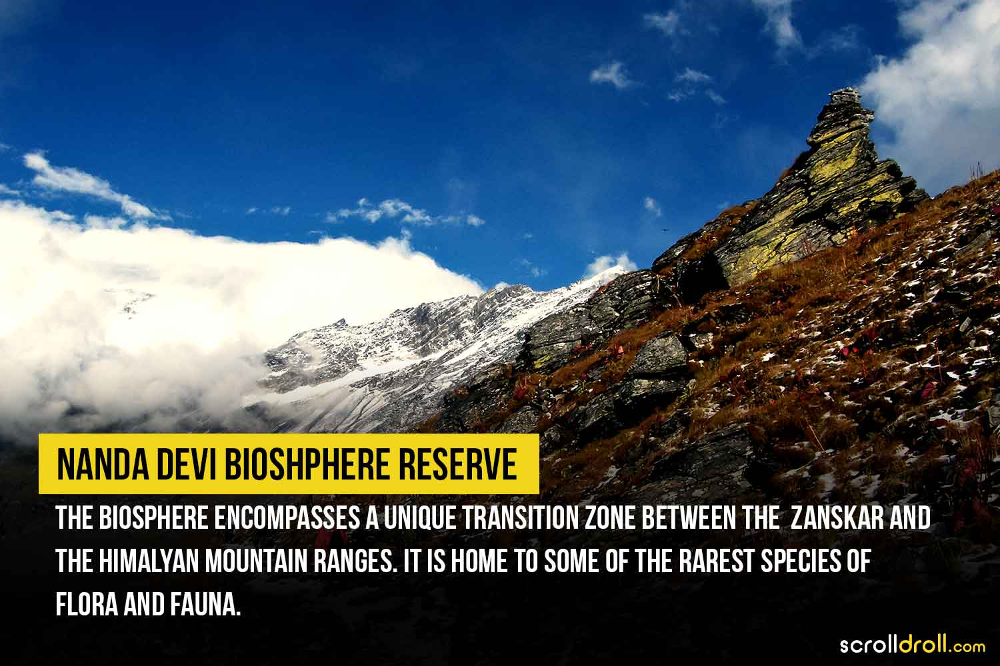

Our Informations







Around 223 species of orchids have been found in North India, and of these, 150 are from Uttarakhand. The state is home to about 102 species of mammals, 623 types of avifauna, 124 varieties of fish, 19 types of amphibians and 69 categories of reptiles. Some of the highly endangered faunae you can find in Uttarakhand are Asian elephant, snow leopard, tiger, musk deer, Himalayan monal, king cobra, bharal, etc. The state has 6 wildlife sanctuaries and 6 national parks. The first national park of India, the Corbett National Park, was established in Uttarakhand in 1936.